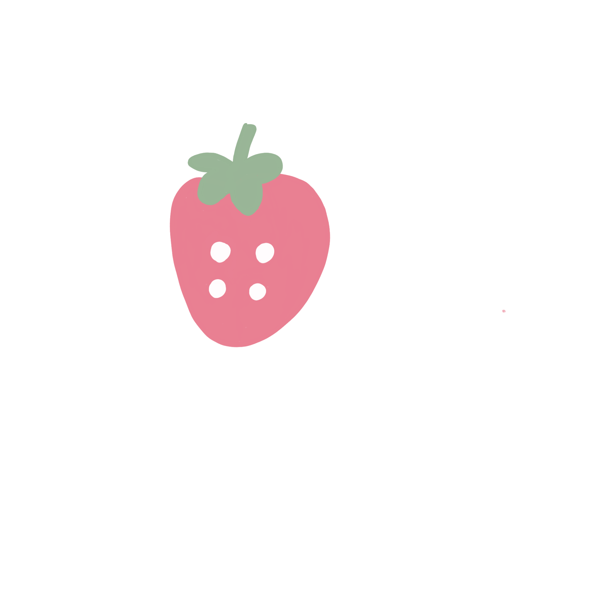

About
Hi! I'm a second-year Master's student in Information Science at Cornell Tech, where I am grateful to work with Professors Angelina Wang and Tanzeem Choudhury on projects related to AI evaluation and behavioral sensing. Previously, I received my Bachelor's degree from Brown University, where I worked with Professor Harini Suresh on responsible AI education.
My research focuses on designing human-centered AI systems that support human wellbeing while preserving agency. I approach this goal from two complementary directions: (1) understanding and evaluating how AI shapes human agency and wellbeing, and (2) using these insights to design responsible, context-aware human-AI interactions, particularly for behavioral health. I'm excited to collaborate on projects related to human-AI interaction, personalization, and AI and wellbeing, or chat more about my work. Feel free to reach out by email!
In my free time, I enjoy reading, writing, making art, thrifting, dancing, cooking and baking (espcially matcha-flavored pastries), and exploring nature.
Selected Publications
Conference & Journal Papers
Under Review at International Journal of Eating Disorders (IJED), 2026
Proceedings of the AAAI/ACM Conference on AI, Ethics, and Society (AIES), 2025
Short Papers
Poster at UbiComp & Health Symposium, 2026
News
June 2026 - Our work on gaze tracking was presented at the UbiComp & Health Symposium.
August 2025 - Started my MS program at Cornell Tech!